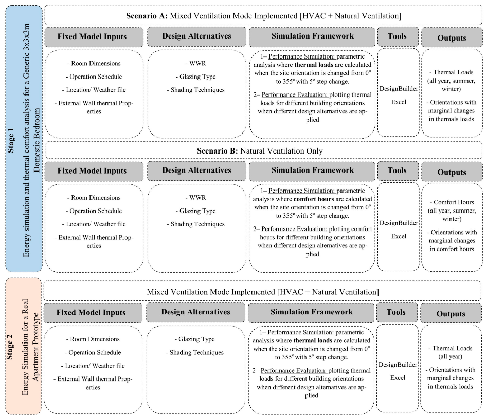
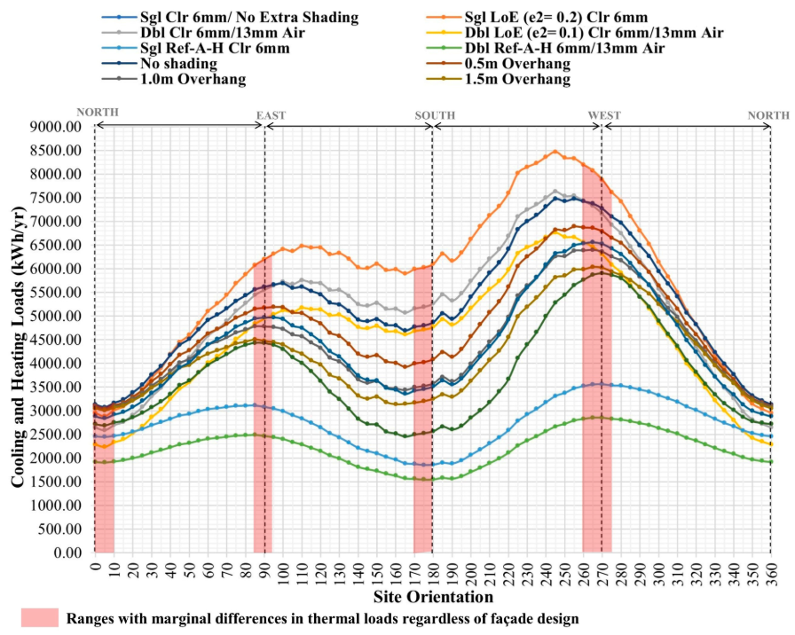
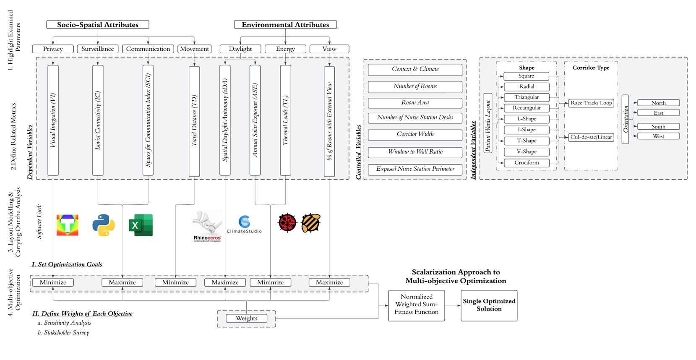
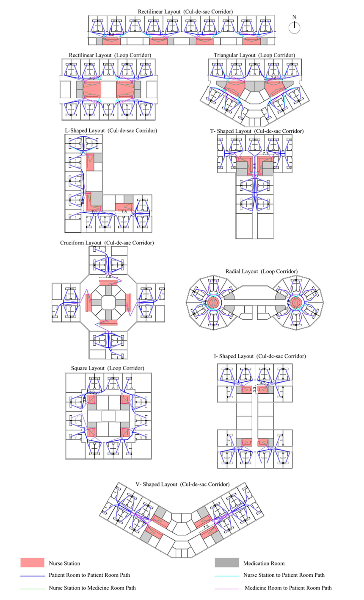
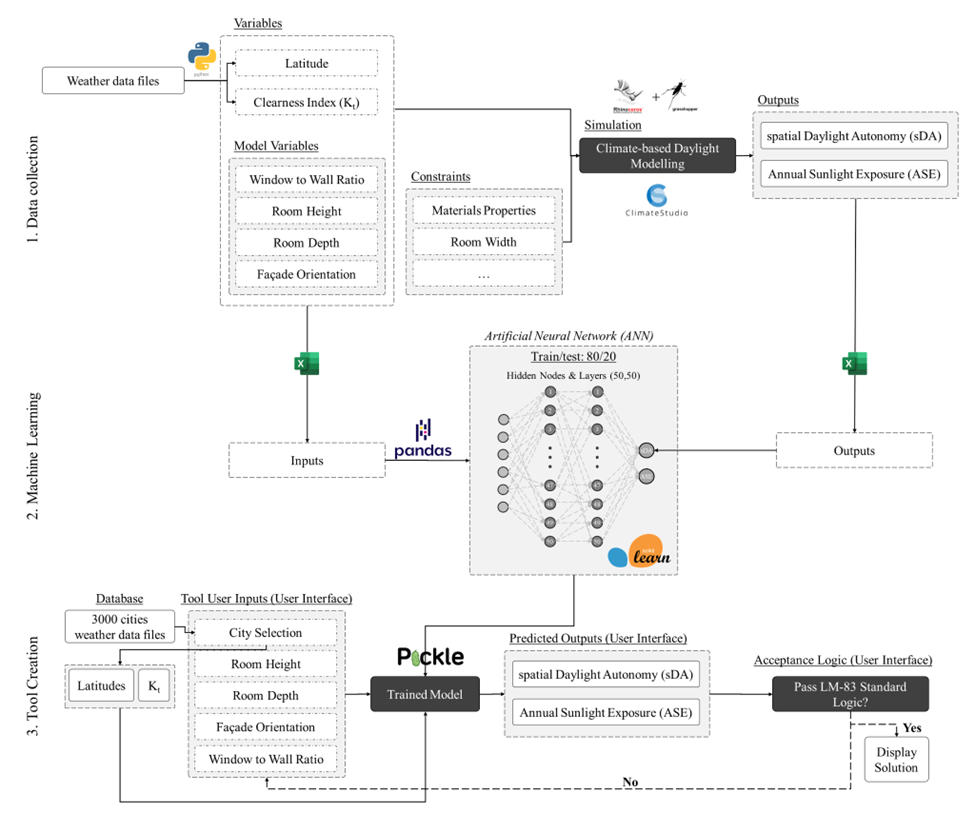
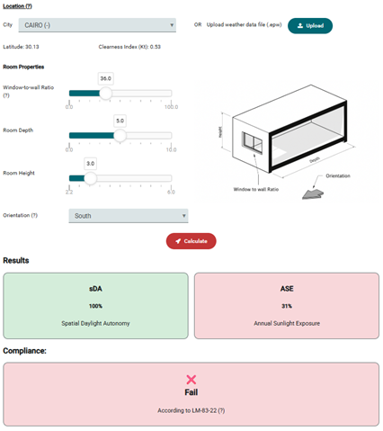

THE DAYLIGHTING LAB
THE DAYLIGHTING LAB
Ahmed Sherif, Islam Mashaly, Mariam Amer
Journal of Architectural Engineering 31 (1), 04024041
The Leadership in Energy and Environmental Design (LEED) v4 daylight credit criteria were adjusted, and the Annual Sunlight Exposure (ASE) threshold was increased from 10% to 20%. The ASE < 20% threshold was also implemented by the Illuminating Engineering Society in the recent lighting measurements standard in 2023. However, the implications of this change across diverse sky conditions remain unclear. Simulations for a typical office space across 32 cities (15°N to 65°N) considered various sky conditions, encompassing 360° orientations and 5%–100% window-to-wall ratios (WWRs). Implementing the ASE < 20% threshold increased accepted daylighting cases from 21% to 52%. Spaces with WWRs between 85% and 100% and oriented between 140°S and 230°S now consistently achieve acceptable daylighting performance in all tested cities, compared to those oriented between 150°S and 210°S, when ASE is ≤10%. The new threshold resulted in greater sensitivity to the sky conditions, aligning more closely with the city’s latitude. Applying both the old and new thresholds shows that spaces with WWRs less than 20% do not achieve acceptable daylighting, regardless of orientation or location. The ASE < 20% appears to favor cities at lower latitudes, with a 168%–260% increase in accepted cases for cities closer to the equator (latitude 15°N to 35°N), compared to a 125%–150% increase for cities further north (latitude 45°N to 65°N). This is related to the spatial Daylight Autonomy limitations imposed by the sky conditions of the northern locations. This disparity suggests that the LEED daylight credit criteria may be more difficult to achieve in higher latitude locations. It is suggested that the LEED credit criteria could be reconsidered in the future for those locations so that they become more sensitive to the differentiated sky conditions in various latitudes.
Ahmed Sherif, Islam Mashaly, Mariam El-Hussainy
Buildings 13 (10), 2639
Go to PublicationLarge-scale residential projects require architects to balance energy efficiency, thermal comfort, and cost-effectiveness in designing building units distributed in different orientations. Applying a single design to all orientations may not result in comfort conditions and energy efficiency; meanwhile, creating a unique design solution for each orientation can be time-consuming and costly to implement. Despite numerous studies recommending design alternatives for particular orientations, the ranges where orientation changes do not demand a change in the façade design still need to be determined. This research aims to identify ranges for which changes in building orientation do not necessitate changes in the façade design. It involves conducting parametric energy and thermal comfort simulations in a test room and testing the findings using real-life datasets from a large-scale residential project. Glass type, window-to-wall ratio (WWR), and utilization of shading devices were among the design parameters investigated. Results show that for all-year-round occupancy projects, a common solution can be applied for orientation changes between 0° to 10° from the north, −10° from the south, and ±5° from east and west for WWR of less than 50% in hot arid climates. These ranges can increase for small WWRs and when reflective glazing or shading devices are applied. This helps streamline design and construction processes, lower costs, and save energy in large-scale residential projects.
 Mariam Amer, Islam Mashaly, Ahmed Sherif
In recent years, numerous studies have explored the effect of the spatial layout of hospital inpatient units on nurse surveillance, staff communication, infection control, and wayfinding. There has also been extensive research on enhancing daylighting and energy performance as vital factors impacting patients' well-being and assisting in designing sustainable and cost-effective projects. However, there is a lack of studies addressing the combination of these objectives. This research explores the potential of a multi-objective optimization framework that synergizes socio-spatial organizational goals, like patients’ privacy, nurse surveillance, staff communication, and travel distance with energy, and daylighting efficiency in inpatient wards. A weighted sum scalarization fitness function was employed to achieve preference-based multi-objective optimization and determine the layout that balances the mentioned objectives. The research team distributed a survey to healthcare facilities designers and practitioners to assess each objective’s relative importance and assigned weight. The analysis conducted in this study is for a hot arid climate. The findings of this research elucidate that the optimum inpatient ward layout depends on stakeholder priorities. Out of the investigated layouts, the rectilinear layout with a cul-de-sac corridor facing North provided the best balance of all eight goals when their weights are equal. Meanwhile, the cruciform layout, with centrally located nurse stations, performed best in prioritizing patient privacy and surveillance, which stakeholders identified as the most vital parameters in inpatient ward design. This research helps streamline the design and decision-making process for large-scale healthcare projects, thus helping improve healthcare quality and creating spatially efficient, climate-responsive projects.
 Islam Mashaly, Mariam El Hussainy, Ahmed Sherif, Khaled Tarabieh
Go To ToolThis study presents a novel daylighting performance prediction tool that aims at assisting designers in arriving at a range of design options for office spaces. The tool uses a machine learning module for application in different geographic locations. It facilitates rapid and reliable daylighting performance evaluation, particularly for early design phases, while offering user-friendly functionality for non-expert users. The study utilizes a three-stage methodology encompassing data collection from 100 cities, development of a machine learning model using an Artificial Neural Network model (ANN), and deployment of the web-based daylighting prediction tool interface. The ANN model achieved high predictive accuracy with R² values exceeding 0.90 and MAE below 5% across most city latitudes. The tool offers comprehensive insights into climate-based all year-round daylight performance metrics. It provides recommendations tailored to specific design scenarios through simulations conducted for various building orientations, window-to-wall ratios, room depths, and heights. The study emphasizes the significance of considering geographical parameters -such as the latitude and clearness index- in daylighting analysis and highlights the tool's potential in enhancing design decision-making processes while being simple-to-use. By empowering architects with actionable recommendations in the preliminary stages of design, the tool contributes to bridging the gap between daylight simulation research and practical design applications, ultimately enhancing the quality and efficiency of architectural design practice.
 